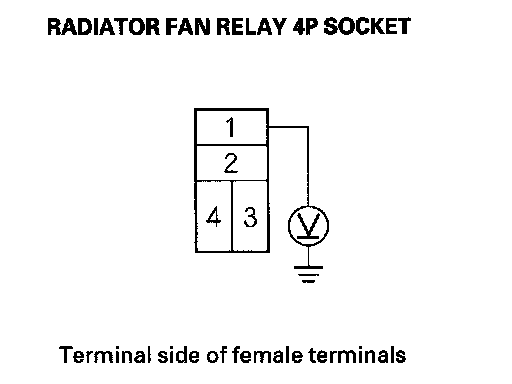
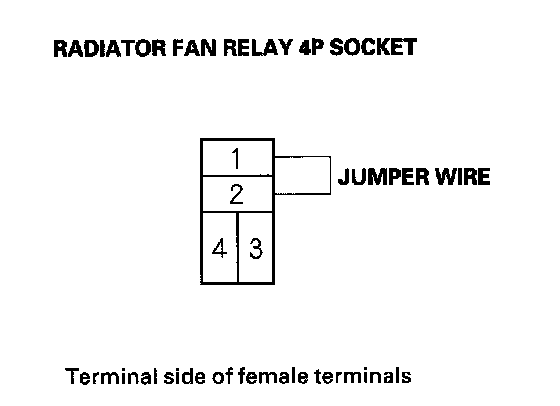
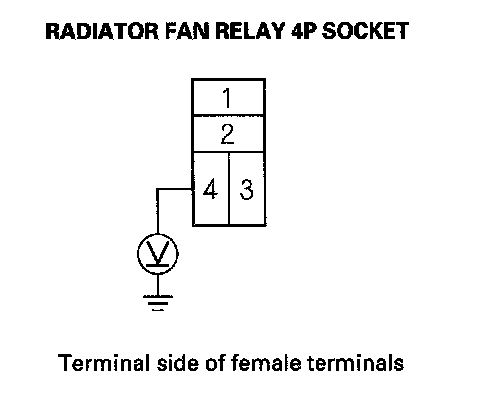

Component Tests and General Diagnostics
Radiator Fan High Speed Circuit Troubleshooting1. Check the No. 7 (7.5 A), No. 8 (15 A) and No. 16 (30 A) fuse in the under-hood fuse/relay box.
Are the fuses OK?
YES-Go to step 2.
NO-Replace the fuse(s) and recheck.
2. Remove the radiator fan relay from the under-hood fuse/relay box and test it.
Is the relay OK?
YES-Go to step 3.
NO-Replace the radiator fan relay.
3. Measure the voltage between radiator fan relay 4P socket terminal No. 1 and body ground.

Is there battery voltage?
YES-Go to step 4.
NO-Repair open in the RED wire between radiator fan relay 4P socket terminal No. 1 and the No. 3 fuse in the main under-hood fuse box.
4. Connect radiator fan relay 4P socket terminals No. 1 and No. 2 with a jumper wire.

Does the radiator fan run at high speed?
YES-Go to step 5.
NO-Repair open in the BRN wire between radiator fan relay 4P socket terminal No. 2 and radiator fan motor 2P connector terminal No. 2.
5. Turn the ignition switch ON (II).
6. Measure the voltage between radiator fan relay 4P socket terminal No. 4 and body ground.

Is there battery voltage?
YES-Repair open in the PUR wire between radiator fan relay 4P socket terminal No. 3 and the powertrain control module (PCM) (A5).
NO-Repair open in the PUR wire between radiator fan relay 4P socket terminal No. 4 and the underhood fuse/relay box.